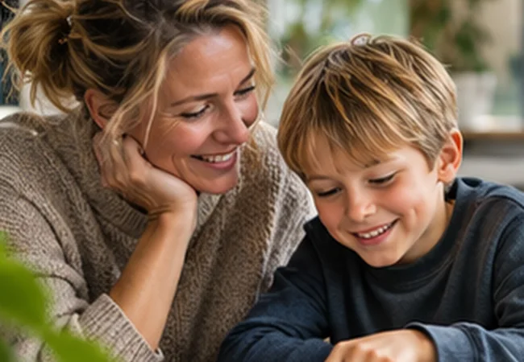

Dansk, historie og billedkunst
Jeg arbejder med læsning, faglige tekster, samtaler og skriftlighed i undervisningen, og med de forskelle, eleverne kommer med.
Jeg kan godt lide, når faglig viden bliver til noget, vi kan undersøge sammen. I klasselokalet, i vejledningen og på studiet.


Jeg hedder Mette Sølvbjerg Fuhlendorff. Til daglig er jeg dansklærer og læsevejleder på Kragelundskolen i Aarhus, hvor jeg også er fagkoordinator for dansk. Jeg underviser desuden i historie og billedkunst. Før Kragelundskolen har jeg blandt andet arbejdet på Rundhøjskolen.
Det bedste ved mit arbejde er mødet med eleverne. Nogle gange er det et enkelt ord, der driller. Andre gange er det en hel tekst, som føles uoverskuelig. Jeg prøver at finde ud af, hvad der faktisk sker, når eleven læser, før vi beslutter, hvad vi skal gøre.
Jeg er diplomuddannet læsevejleder og har en diplomuddannelse i psykologi. Jeg har tidligere været AKT-lærer, og jeg arbejder med co-teaching, kollegial vejledning og udvikling af undervisning. Jeg har også vejledt forældre, holdt oplæg og faciliteret workshops. I mit skolearbejde samarbejder jeg blandt andet med KCL.
Jeg er lidt af en faglig nørd. Jeg elsker at gå tæt på tekster: Hvorfor bliver én formulering overbevisende, mens en anden er upræcis? Hvad fortæller et citat egentlig, og hvad er det bare fristende at læse ind i det? Den nysgerrighed er en vigtig del af mit arbejde med både elever og studerende.
Når jeg hjælper med opgaveskrivning, går jeg efter det, der får en faglig tekst til at hænge sammen: et spørgsmål, der kan undersøges, en analyse med belæg og en konklusion, der svarer på spørgsmålet. Det handler ikke om at få teksten til at lyde mere akademisk. Det handler om at kunne se og forstå tankegangen bag den.
Læsning er ikke kun noget, vi arbejder med i dansktimerne. Den har betydning i historie, i naturfag, i arbejdet med en opgave og i elevens oplevelse af at kunne være med.
Jeg har skabt Læseblik til dig, der læser til lærer, er på vej til at blive læsevejleder eller tager en diplomuddannelse. Her vil jeg samle den viden og de redskaber, jeg selv ville have glæde af at kunne tage direkte med ind i undervisning og vejledning.
Du finder faglige guides, cases, lydforløb, interaktive aktiviteter og materialer, du kan undersøge og afprøve. Jeg vil gerne vise hvordan man kan arbejde med stoffet, ikke bare forklare hvad det handler om.
Hvad ser vi?
Vi begynder med elevens faktiske læsning, strategier og deltagelse.
Hvad ved vi?
Vi bruger faglig viden og relevante undersøgelser uden at gøre én test til hele fortællingen.
Hvad gør vi nu?
Vi vælger et overskueligt næste skridt, prøver det af og følger op.
Jeg arbejder på tværs af de roller, der mødes omkring en elev. Derfor fylder samarbejdet også meget i Læseblik.
Jeg arbejder med læsning, faglige tekster, samtaler og skriftlighed i undervisningen, og med de forskelle, eleverne kommer med.
Jeg har erfaring med elevsamtaler, læsevanskeligheder, ordblindhed og trivsel. Jeg har også vejledt både forældre og kolleger.
Jeg har holdt oplæg, faciliteret workshops og arbejdet med kollegial sparring. I mit skolearbejde samarbejder jeg også med KCL i Aarhus.
Jeg ved godt, at der sjældent findes én løsning, som passer til alle elever. Måske er det netop derfor, jeg synes, arbejdet med læsning er så vigtigt og spændende.
Mit håb er, at du bruger Læseblik som et sted at blive klogere, stille spørgsmål og prøve noget af. Tag en guide med i praktikken. Brug en case i studiegruppen. Afprøv et spil, og læg mærke til, hvad eleven faktisk gør.
Det er i de små iagttagelser og de fælles samtaler, vi ofte får øje på det næste gode skridt.
Når jeg læser en opgave, leder jeg efter forbindelsen mellem det, den studerende har iagttaget, de begreber der bruges, og den konklusion der drages. Det er dér, fagligheden bliver synlig.
Se min guide til faglig opgaveskrivningMange hilsner
Mette
Læseblik er mit selvstændige faglige projekt. Siden er ikke udgivet af Kragelundskolen eller KCL.